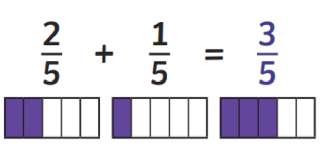
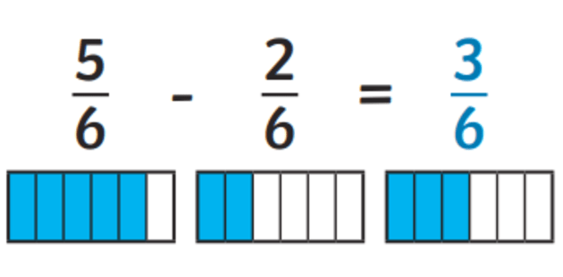

Unidad 0 - Fracciones
Operatoria

Objetivo
Resolver ejercicios y problemas que involucren operatoria con fracciones.
Adición y sustracción
Para sumar o restar fracciones, estas deben tener el mismo denominador.


Resuelve las siguientes sumas y restas de fracciones
Ejemplo
$\begin{aligned} \frac{1}{3} + \frac{4}{3} &= \frac{1+4}{3} \\ &= \frac{5}{3} \\ &= 1\frac{2}{3} \end{aligned}$
Ahora estos
- $\frac{3}{4} + \frac{2}{4} =$
- $\frac{4}{5} + \frac{6}{5} =$
- $\frac{5}{2} - \frac{3}{2} =$
- $\frac{7}{3} - \frac{2}{3} =$
Adición y sustracción
Para sumar o restar fracciones, primero deben tener el mismo denominador. Para eso amplificamos o simplificamos para luego operar.
$\frac{2}{3} + \frac{1}{2} \overset{\textcolor{#e06666}{\text{amplificar}}}{=} \frac{4}{6} + \frac{3}{6} = \frac{4+3}{6} =\frac{7}{6} \overset{\textcolor{#e06666}{\text{mixto}}}{=} 1\frac{1}{6}$
Resuelve las siguientes sumas y restas de fracciones
- $\frac{4}{3}+\frac{1}{2} =$
- $\frac{1}{4}+\frac{2}{3} =$
- $\frac{5}{6}-\frac{1}{3} =$
- $\frac{2}{5}+\frac{1}{4} =$
- $\frac{7}{8}-\frac{1}{2} =$
- $\frac{3}{5}+\frac{3}{4} =$
Resuelve las siguientes sumas y restas de fracciones
- $\frac{1}{2} + \frac{1}{3} + \frac{1}{4} =$
- $\frac{4}{3} + \frac{1}{2} - \frac{2}{3} =$
- $\frac{3}{4} - \frac{1}{3} + \frac{1}{6} =$
- $\frac{5}{6} - \frac{1}{2} - \frac{1}{4} =$